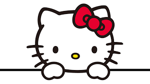

Hipervinculos
Hipervinculos externos
A una pagina de Internet
Google
Pagina donde encontrare a mi Capi
El periodico de Mexico
A una pagina de Internet en otra pestana
Noticias
A una pagina de Internet en una imagen

A un archivo
Imagen de Kitty
Historia de HK
Hipervinculos a correo
Mi correo

Hipervinculos internos
Menu
Mision
Vision
Escudo
Lema
Himno
Mascota
Porra
Instituto Politecnico Nacional
Mision Institucional
El Instituto Politecnico Nacional contribuye al desarrollo economico y social de la nacion, a traves
de la formacion integral de personas competentes; de la investigacion, el desarrollo tecnologico y
la innovacion. Ademas tiene reconocimiento internacional por su calidad e impacto social.

Vision
Institución educativa incluyente de prestigio internacional, que con su comunidad contribuye al
desarrollo cientifico, tecnologico e innovacion con impacto social en el pais.
Escudo
Fueron las inquietudes estudiantiles quienes tomaron la iniciativa para crear los simbolos que
identificaran a la naciente institucion politecnica. En los anos 1944-1945 la Federacion Nacional de
Estudiantes Tecnicos (FNET) lanzo una convocatoria para disenar un escudo representativo de las
escuelas que integraban el IPN. El primer lugar fue otorgado al alumno Armando Lopez Fonseca
quien con ayuda de su companero Jorge Grajales, lograron que su diseno fuera el ganador. El
escudo fue modificado en 1948 conservando sus elementos originales.

Lema: "La Tecnica al Servicio de la Patria"
El lema era utilizado por algunos estudiantes desde antes de la creacion del IPN, pero fue durante
el Primer Congreso Nacional de Estudiantes Tecnicos, realizado en la ciudad de Chihuahua en
1937, donde el estudiante Jesus Robles propuso utilizar la frase La Tecnica al Servicio de una Patria
Mejor. Anos mas tarde este lema fue modificado por "La Tecnica al Servicio de la Patria", el cual
expresa los ideales del Politecnico.
Himno
Para obtener el Himno se convoco a un concurso abierto para su creacion, pero no hubo eco al
llamado. Luego de dos nuevas convocatorias, la poetisa Carmen de la Fuente resulto triunfadora
del certamen y la Direccion General del Instituto le premio, el 15 de julio de 1961. Posteriormente,
como la musica aun no estaba elegida, se convoco a un certamen para poner musica a la letra del
himno del IPN, y resulto triunfador Armando Gonzalez Dominguez, pianista reconocido y director
de varias orquestas.
Mascota
Es tradicin que las Instituciones de Educacion Superior, y particularmente los equipos deportivos,
elijan una mascota; la del Instituto Politecnico Nacional es un burro blanco. Se conocen por
tradicion oral diferentes versiones que al paso del tiempo se funden entre la realidad y el mito, el
caso del Instituto Politecnico Nacional es de las mas conocidas, la razon es muy particular. Se dice
que al establecer los limites del terreno donde se construia el Instituto, en la Ex Hacienda de Santo
Tomas durante los anos 30, quedo encerrada una burra blanca; al ser descubierta por los
estudiantes e integrantes del primer equipo de futbol americano la tomaron como su mascota.
Con el paso de los anos, la burra se convirtio en uno de los simbolos del Politecnico,
fundamentalmente en el ambito deportivo.

Porra
Uno de los deportes que crecio junto con el Politecnico fue el futbol americano. Desde sus inicios
ha dejado profunda huella entre sus seguidores, quienes para apoyarlo han entonado diferentes
porras: desde el chiquitibum hasta el huelum; sin embargo, es este el que ha permanecido vigente
a traves de un grito de fiesta para celebrar y cerrar todos los eventos. El 16 de marzo de 1985 el
autor de la porra, Victor Chambon Burgoa, hizo el siguiente relato:
En 1937, al saber que habia hecho algunas canciones que cantabamos los jugadores de futbol
americano del IPN, se acerco a mi un grupo de muchachos y muchachas que estaban iniciando el
primer nucleo de directores de la porra del Politecnico. Ahora bien, en el Poli, la palabra para
reunir a los estudiantes era -¡huelga, huelga!-. Basado en esto, sugeri que se utilizara la palabra
'huelum'. Ademas, decidimos que no se utilizara la palabra 'rah, rah', porque ya estaba en el 'Goya'
y era una palabra porristica usada casi en todo Estados Unidos. Por otro lado, una muchacha hizo
el comentario que el Poli era la 'gloria'. Otra persona insistia que la porra debia ser de mucho
'pegue' y como consecuencia natural, broto la 'cachiporra'. Total, despues de un par de horas de
platicas y discusiones, salio la que ustedes conocen".